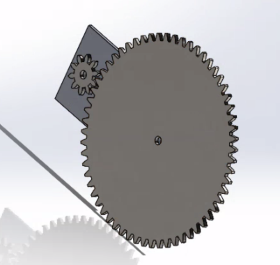
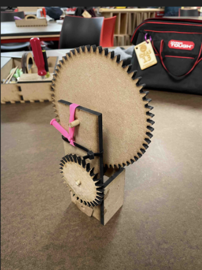
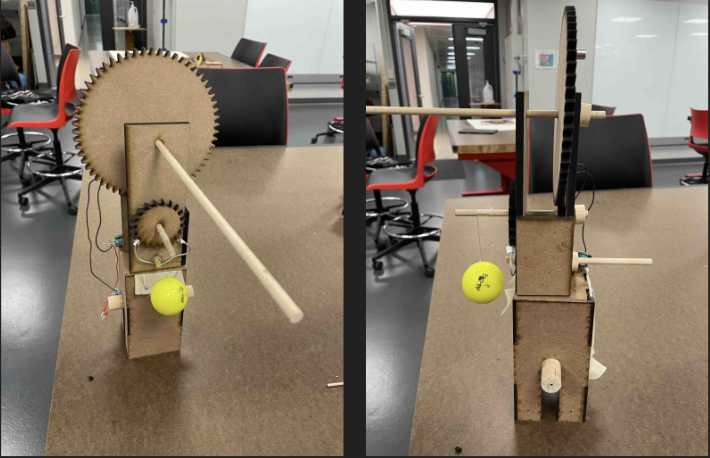
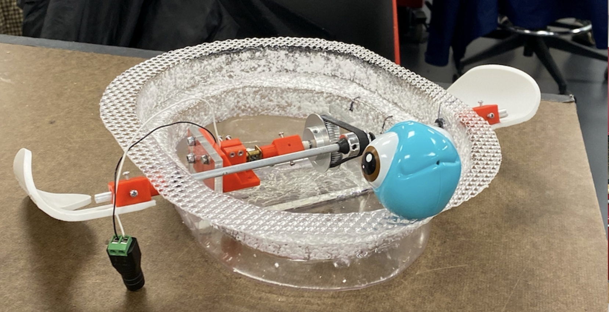
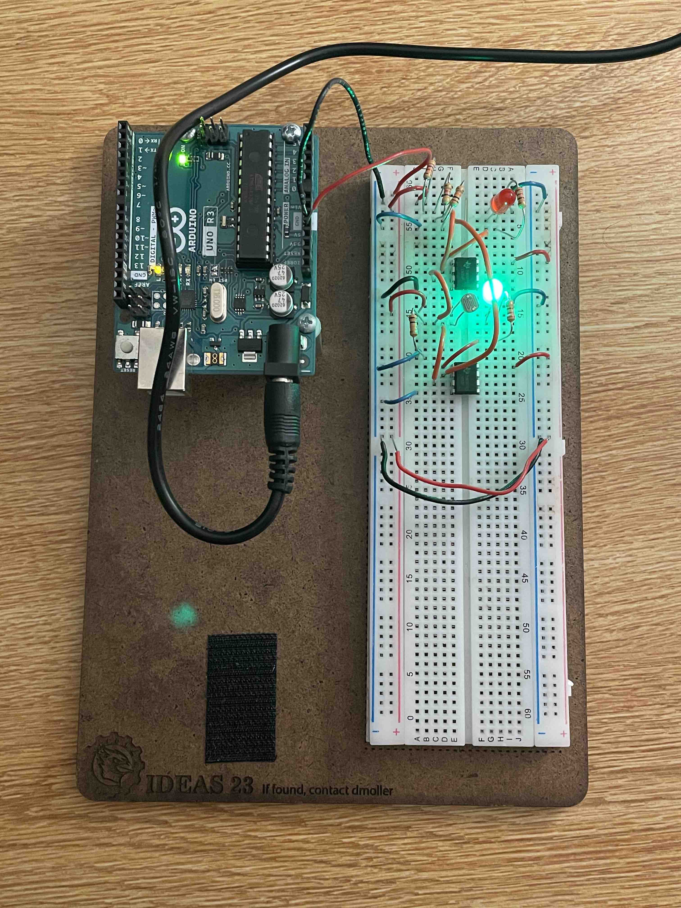
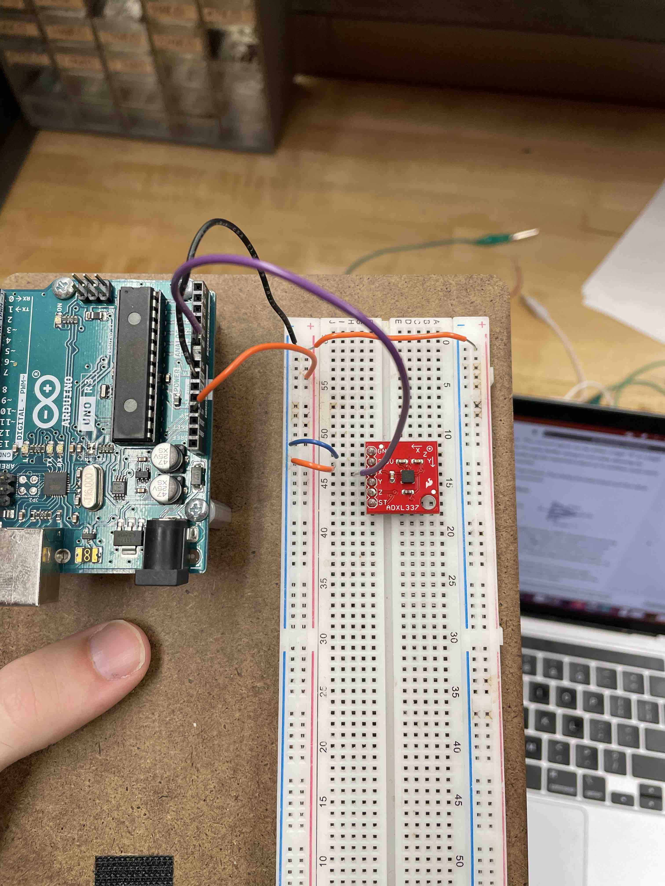
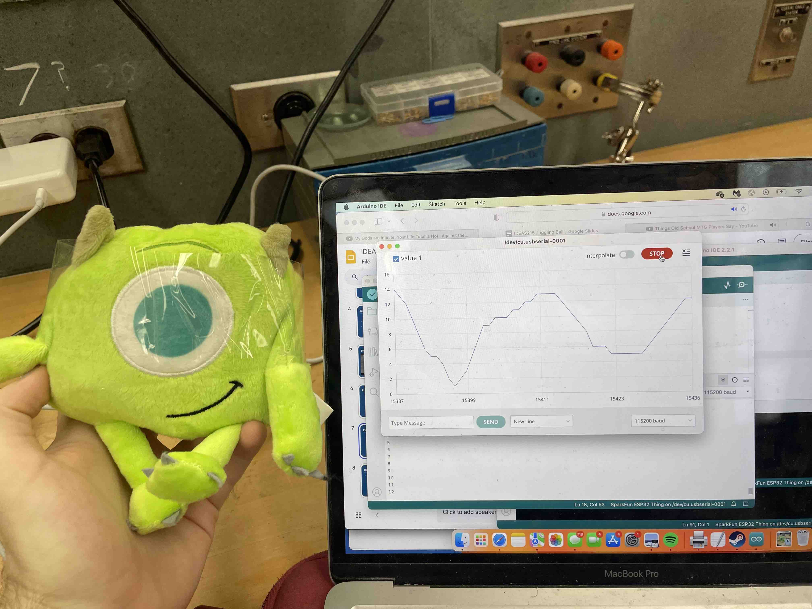
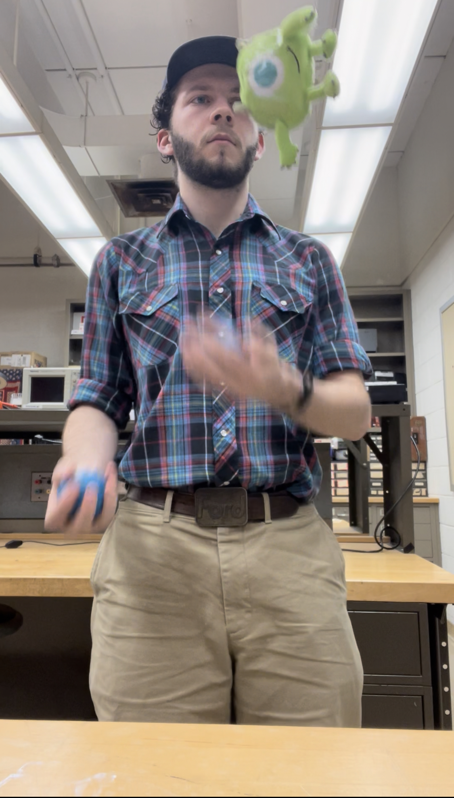
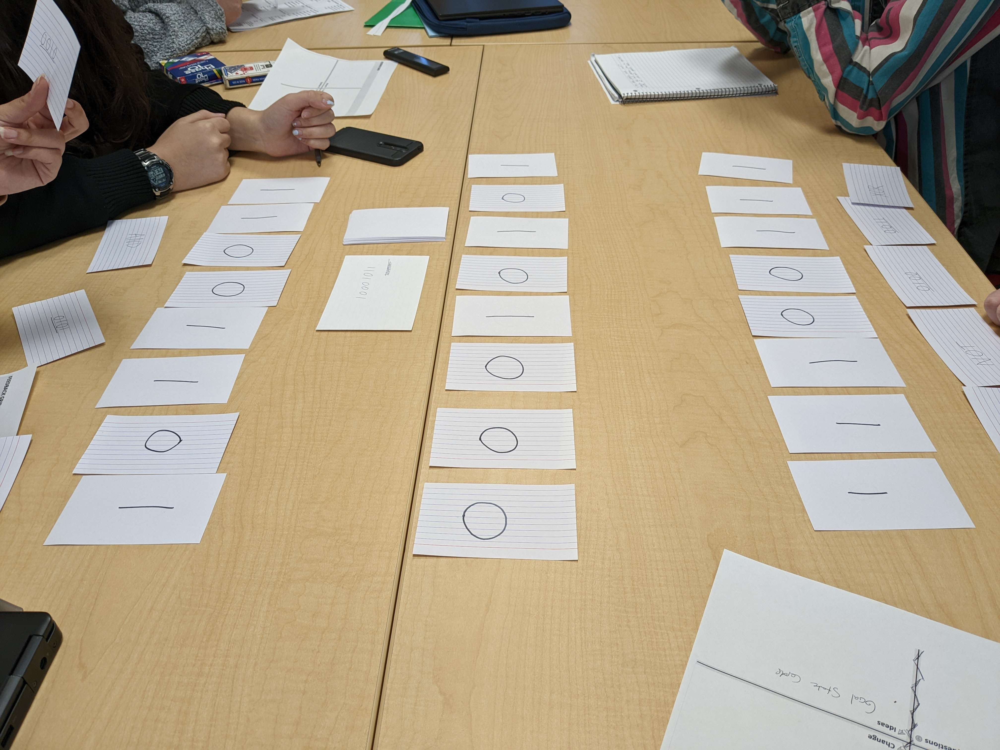
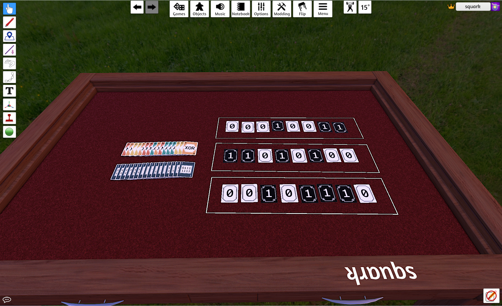

Welcome
This is my portfolio for partial fulfillment of the IDEAS Minor. This minor taught me how to think critically, and how to create and work on projects that interested and intrigued me. Below are some descriptions and images of work I have done in three of my IDEAS classes, IDEAS170, IDEAS215, and IDEAS209. Enjoy!
IDEAS170: Introduction to Mechanical Design and Engineering
Hopper Project
This is a description of my hopper. The main part of my hopper was an escapement system using a golf ball tied to a gear. This is the part of my project that took me the longest, and I also found it to be the most rewarding! As for the rest of it, I had a rocket igniter that burned a bit of fishing line once my gear had been turned enough times. This caused a wooden beam to shoot upwards and cause my hopper to actually jump. As mentioned above, the longest part of this project was the timer system, where I used an escapement. Below are some images of early prototypes of the escapement system.

My escapement system in Solidworks. I created many of my parts in Solidworks and cut them out using the laser printer.

A prototype of my escapement.

A picture of my final hopper. I ultimately had a fairly good success rate with the hopper, but it was not 100% consistent. Still, it is a project I am very happy with, and I am incredibly proud to have made a working escapement with the very limited materials provided to us.
Final Project: The Swimmer
Our final project for IDEAS170 was a swimmer. Our group decided to create a swimmer that would swim like a sea turtle. We gave our project flippers and used onboard motors to turn the flippers at a consistent rate. The biggest struggle was waterproofing our swimmer and making sure none of the motors got waterlogged. However, we used melted plastic to create a hull for our swimmer, which ended up working way better than expected. Overall, our swimmer was very fast and did not even take on that much water! This project ended up being a very large success.

IDEAS215: Introduction to Sensors, Measurement, and Data Analysis
Introduction to Electronics
One of the most important skills I learned in IDEAS215 was how to create electronics and actually use sensors to capture data in order to analyze it. To do this, we created many projects and introductory circuits designed to teach us how to collect and analyze data. Below are some of these introductory projects, along with a brief description of what they do.

Above is a sensor that would measure the brightness levels and turn on the green LED if it was bright, and the red LED if it was dark. This was used to create data that was put into MatLab's classification learner to guess whether a given time would be light or dark out outside. This circuit used OpAmps, which are an important IC chip for comparing two voltage values. This taught us how to use those chips and capture data using a light sensor.

Above is an acceleration sensor circuit. This circuit would capture acceleration data in three dimensions and return the x, y, and z acceleration. We added this to MatLab and analyzed this data. This circuit was also very useful for my final project, which I outline in the section below.
Final Project: Juggling Sensor
My final project for IDEAS215 was a juggling sensor that would track a juggling ball's acceleration and wirelessly send it to my computer. This required using ESP32, a type of microcontroller with built in wireless processing. This processing allowed me to send data from the juggling ball into another ESP32 which was connected to my computer. Using this, I could instantly plot and record data from my juggling ball in my computer. Some images of this project are shown below.

My juggling ball, which was housed in a Mike Wazowski dog toy, along with some acceleration data that had just been captured.

What good is a juggling ball if it can't be juggled? A picture of me juggling my project.
IDEAS209: Educational Gaming Lab
Central Processing
This class was focused on learning how to teach through the use of board games. The whole semester, we were working towards a final project. My group's final project was a board game called "Central Processing," which was meant to teach about computer programming and machine code and functions. For a brief description of the rules, consider the following blurb: "Central Processing is a turn based game where each player can play any number of cards from their hand each turn. These cards change the registers based on how they were played. Through the usage of three binary operators (and, or, xor) as well as one unary operator (not), players must match a randomly set binary sequence!" Central Processing took a lot of balancing, but ultimately was a fun game that taught people about binary operations and how to work with computers.

Above is an example of what a typical game of Central Processing looks like. There is the main register in the middle, along with each person's individual registers in front of them.

In addition to a physical game, we also created an online version in Tabletop Gaming Simulator, which allows you to play the game on Steam. This can be accessed at https://steamcommunity.com/sharedfiles/filedetails/?id=2905024870.